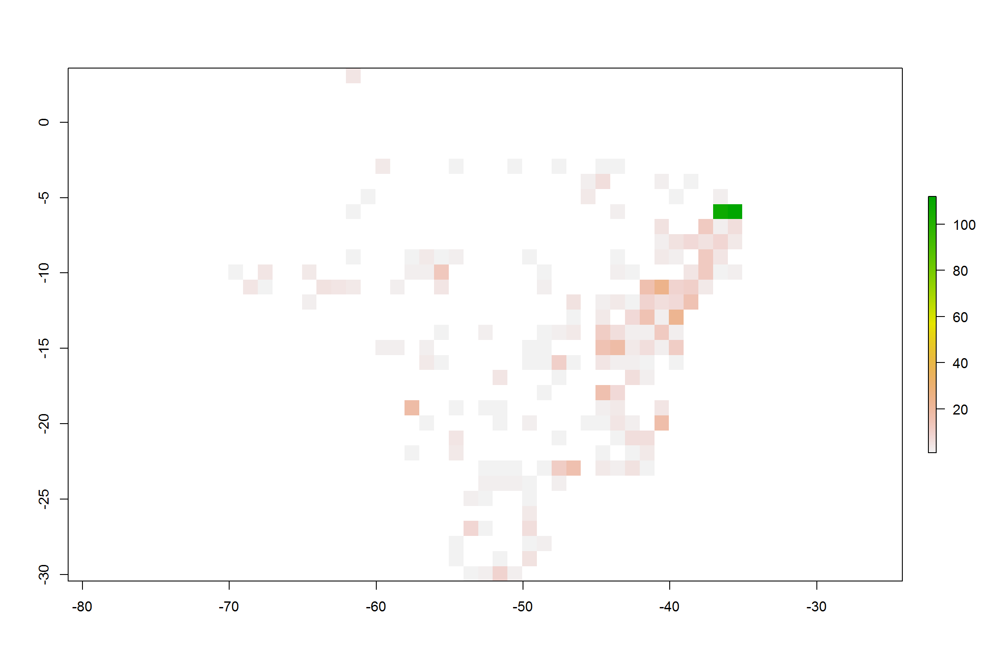
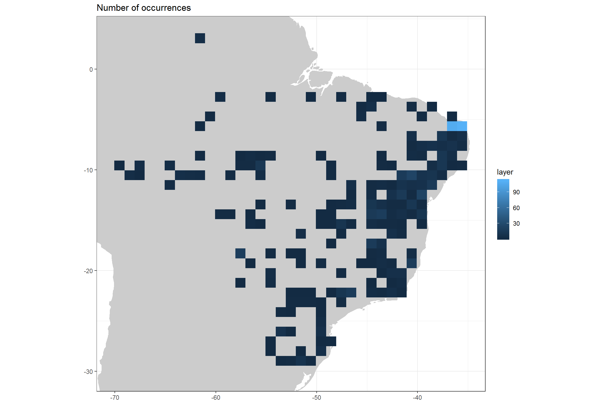
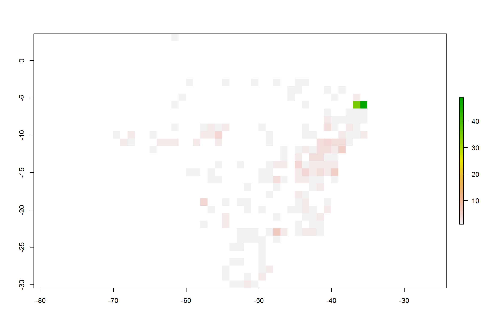
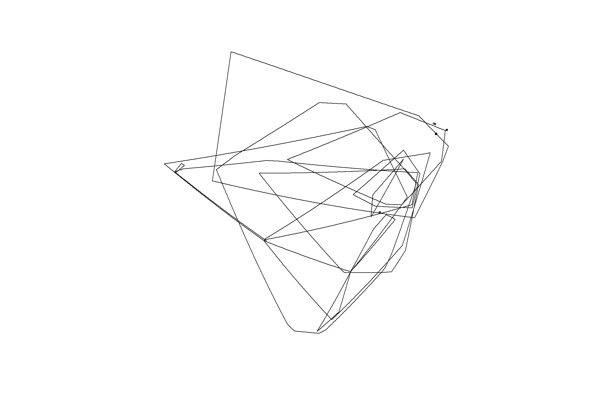
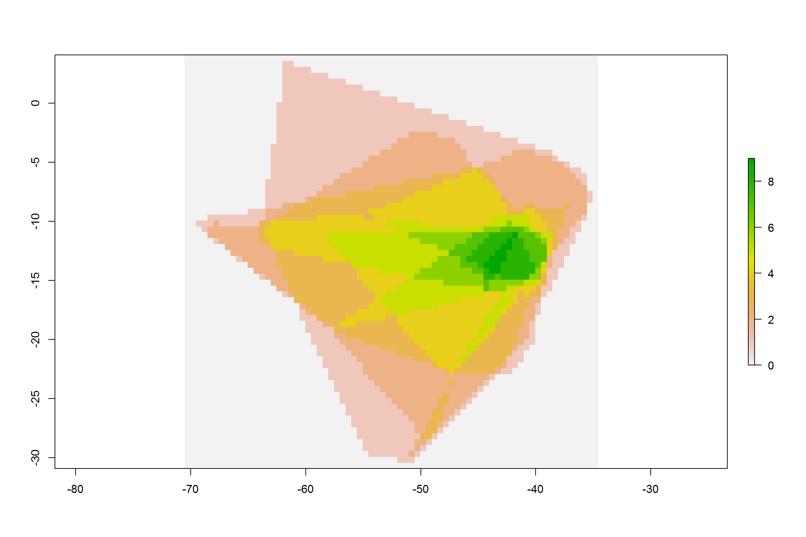
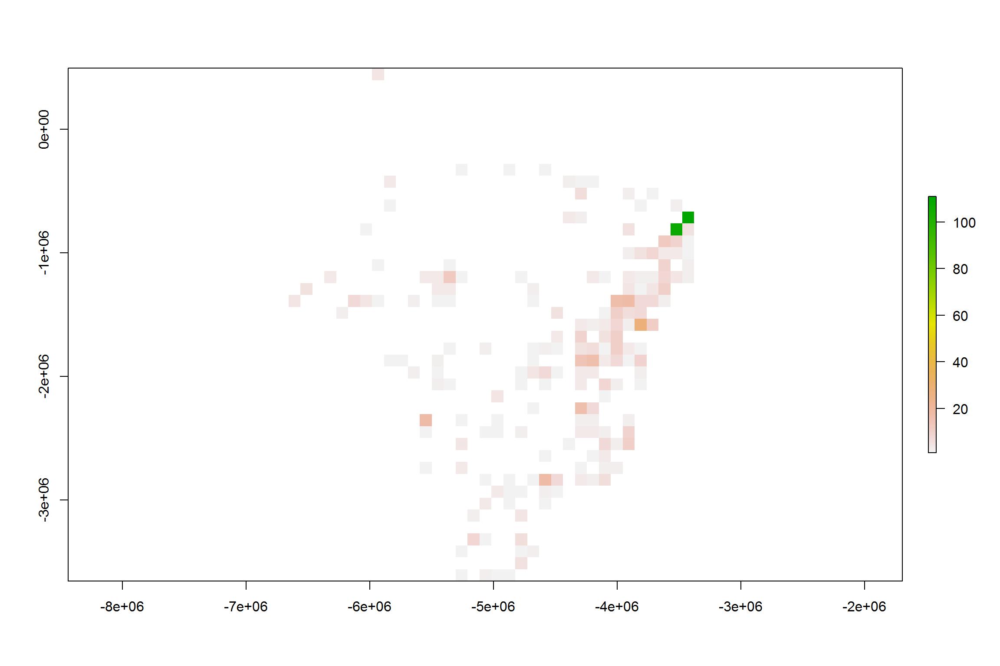
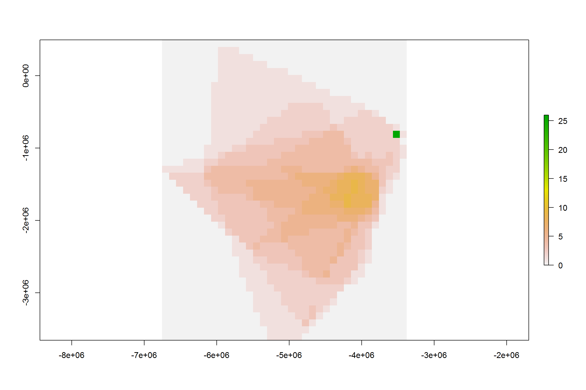

library(readr)
library(ggplot2)
library(magrittr)
library(speciesgeocodeR)
library(raster)
library(rgdal)dat <- read_csv("inst/occurrence_records_clean.csv")
# Visualize
world.inp <- map_data("world")
ggplot() + geom_map(data = world.inp, map = world.inp, aes(x = long, y = lat,
map_id = region), fill = "grey80") + xlim(min(dat$decimalLongitude, na.rm = T),
max(dat$decimalLongitude, na.rm = T)) + ylim(min(dat$decimalLatitude, na.rm = T),
max(dat$decimalLatitude, na.rm = T)) + geom_point(data = dat, aes(x = decimalLongitude,
y = decimalLatitude), colour = "darkblue", size = 1) + coord_fixed() + theme_bw() +
theme(axis.title = element_blank())RichnessGrid)For a quick overview you can first visualize pattern in a lat/long grid.
# The number of occurrences per grid cell
gocc <- RichnessGrid(dat, type = "abu")
plot(gocc)
# Or more sofisticated plotting Prepare for plotting
plo_gocc <- data.frame(rasterToPoints(gocc))
# Visualize
ggplot() + geom_map(data = world.inp, map = world.inp, aes(x = long, y = lat,
map_id = region), fill = "grey80") + xlim(min(dat$decimalLongitude, na.rm = T),
max(dat$decimalLongitude, na.rm = T)) + ylim(min(dat$decimalLatitude, na.rm = T),
max(dat$decimalLatitude, na.rm = T)) + geom_raster(data = plo_gocc, aes(x = x,
y = y, fill = layer)) + # scale_fill_viridis(name = 'Species', direction = -1)+
coord_fixed() + theme_bw() + ggtitle("Number of occurrences") + theme(axis.title = element_blank())
# The number of species per grid cell
gri <- RichnessGrid(dat)
plot(gri)
As the simplest model of species distribution we can use convex hull to fill the gaps.
# Calculate ranges
ranges <- CalcRange(dat)
# Visualize
plot(ranges)
# Write to working directory
writeOGR(ranges, dsn = "inst", layer = "range_polygons", driver = "ESRI Shapefile",
overwrite_layer = TRUE)# Create richness raster
r_ri <- RangeRichness(ranges, res = 0.5)
plot(r_ri)
So far we have displayed species richness in a lat/lon projected raster. This is OK to get a feeling for the data, but strictly speeaking wrong, since the actuala rea of a 1x1 degree cell varies with latitude. So, it is better to use an eaqual area pojection, such as the Lamberts projection.
# Define projections
wgs1984 <- CRS("+proj=longlat +ellps=WGS84 +datum=WGS84 +no_defs")
behr <- CRS("+proj=cea +lon_0=0 +lat_ts=30 +x_0=0 +y_0=0 +datum=WGS84 +ellps=WGS84 +units=m +no_defs")
# reproject the occurrence records
pts <- dat[, c("decimalLongitude", "decimalLatitude")] %>% SpatialPoints(proj4string = wgs1984) %>%
spTransform(behr)
# create a aqual area template in behrman projection
be <- raster(ncol = 360, nrow = 142, xmn = -17367529, xmx = 17367529, ymn = -6356742,
ymx = 7348382, crs = behr)
be <- crop(be, extent(pts))
pts <- data.frame(dat$species, coordinates(pts))
# Equal area Occurrence number
eq_occgri <- RichnessGrid(x = pts, ras = be, type = "abu")
plot(eq_occgri)
# Equal area speces richness
eq_rigri <- RichnessGrid(x = pts, ras = be)
plot(eq_rigri)
# Range based species richness
ranges <- spTransform(ranges, behr)
eq_rri <- RangeRichness(x = ranges, ras = be)
plot(eq_rri)
writeRaster(eq_rri, filename = "inst/equal_area_range_richness", format = "ascii",
overwrite = TRUE)